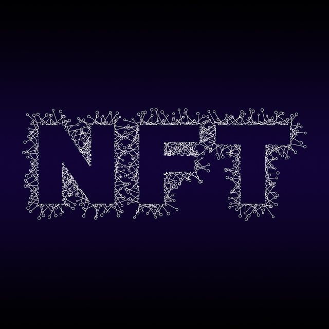

bit_análisis@gmail.com
Formación avanzada en IA y Blockchain
Aprende a trabajar
con datos de
Blockchain
BitAnálisis te guía paso a paso en el uso de inteligencia artificial aplicada al análisis de datos en blockchain. Sin criptomonedas, sin trading, solo ciencia de datos y tecnología.
Especialistas en IA para Datos en Blockchain
En BitAnálisis nos dedicamos a la formación y desarrollo de habilidades para trabajar con datos de blockchain utilizando inteligencia artificial. Nuestro enfoque es técnico, práctico y totalmente libre de especulación financiera.
- Procesamiento de datos descentralizados
- Algoritmos de IA aplicados a blockchain
- Extracción y análisis de datos en cadena
- Visualización de patrones y estructuras
- Automatización con modelos de aprendizaje
- Aplicaciones reales sin criptomonedas

Características
Descubre herramientas clave para aprender a trabajar con datos de blockchain usando inteligencia artificial.
Introducción y Aplicaciones
Ofrecemos una guía estructurada para comprender los conceptos esenciales del análisis de datos en blockchain utilizando inteligencia artificial.
- Evaluación del funcionamiento de los nodos y estructuras de bloques.
- Modelos prácticos para el aprendizaje automático en datos de blockchain.
- Estrategias educativas centradas en datos estructurados y descentralizados.

Procesamiento Avanzado
Implementamos soluciones de inteligencia artificial para procesar y analizar datos provenientes de blockchains sin enfocarnos en aspectos financieros.
- Identificación de patrones mediante redes neuronales aplicadas a bloques de datos.
- Automatización de lectura y clasificación de transacciones blockchain.
- Herramientas para extracción y visualización inteligente de datos.

Automatización de Procesos
- Soluciones integrales para trabajar con grandes volúmenes de datos distribuidos.
- Asesoría especializada en aprendizaje automatizado sobre blockchain.
- Supervisión continua de modelos para garantizar la precisión en el análisis.
Facilitamos el dominio de técnicas avanzadas para el análisis eficiente de blockchain con inteligencia artificial.

Domina el Análisis de Datos en Blockchain con Inteligencia Artificial
Explora un enfoque práctico y accesible para aprender a trabajar con datos de blockchain utilizando herramientas de IA, sin involucrarte en operaciones de criptomonedas.
Procesamiento Inteligente
Desarrollamos soluciones personalizadas para el análisis avanzado de datos en blockchain mediante herramientas de inteligencia artificial, garantizando precisión y adaptabilidad.
Infraestructura de IA
Aplicamos tecnologías avanzadas para automatizar el acceso y la interpretación de datos blockchain, permitiendo modelos predictivos sin enfocarse en criptomonedas ni comercio.
Evaluación de Datos
Ofrecemos formación práctica en el uso de inteligencia artificial para estudiar patrones y estructuras dentro de cadenas de bloques, sin vinculación a inversiones o monedas digitales.
Automatización Inteligente
Utilizamos IA para automatizar el análisis de grandes volúmenes de bloques y transacciones con fines educativos y de desarrollo, sin fines de inversión.
Capacitación Especializada
Nuestro equipo guía a los usuarios en el dominio de herramientas de inteligencia artificial aplicadas a la exploración de estructuras blockchain, desde cero.
Implementación Eficiente
Desarrollamos procesos integrados para el uso práctico de IA en la comprensión de la cadena de bloques, optimizando la extracción de conocimiento.
Testimonios de Participantes
Descubre cómo nuestros programas de formación en inteligencia artificial aplicada a datos blockchain han transformado la forma en que los profesionales analizan y entienden esta tecnología.
Carlos Martínez
Analista de Datos
Gracias a este programa, aprendí a integrar IA en el análisis de datos blockchain de manera eficiente. La formación me proporcionó habilidades únicas y prácticas sin involucrar criptomonedas.
Lucía Ramírez
Especialista en Tecnología
La metodología fue clara y directa. Aprendí a usar modelos de IA para detectar patrones en blockchain sin tener que involucrarme en comercio o monedas digitales.
Javier Torres
Investigador Tecnológico
Esta capacitación me ayudó a construir modelos inteligentes enfocados exclusivamente en datos blockchain. Una excelente base para quienes quieren especializarse en IA técnica.
María Delgado
Consultora de Datos
Con este enfoque pude entender cómo utilizar la inteligencia artificial para extraer información útil de la cadena de bloques. Muy útil para análisis técnico sin entrar en el ámbito financiero.
Estudiantes Activos
Proyectos Analizados
Horas de Formación
Expertos en el Equipo
Servicios Especializados
Ofrecemos formación especializada para trabajar con datos de blockchain mediante el uso de inteligencia artificial, sin involucrar actividades de trading ni criptomonedas.
Análisis de Datos en Blockchain con IA
Enseñamos a utilizar algoritmos de inteligencia artificial para extraer, procesar y analizar datos directamente desde redes blockchain públicas y privadas.
Automatización Inteligente de Datos Blockchain
Diseñamos soluciones educativas que enseñan a automatizar la recolección y clasificación de datos de blockchain usando modelos de IA sin fines financieros.
Detección de Patrones y Anomalías
Formación en técnicas avanzadas de detección de patrones, tendencias y comportamientos atípicos dentro de conjuntos de datos blockchain, usando inteligencia artificial aplicada.
¿Tienes preguntas? Consulta nuestra sección de preguntas frecuentes
Resolvemos las dudas más comunes sobre el uso de inteligencia artificial para trabajar con datos de blockchain sin involucrar criptomonedas ni trading.
¿Por qué es importante aprender a analizar datos de blockchain con IA?
La capacidad de interpretar grandes volúmenes de datos blockchain permite tomar decisiones basadas en información real y detectar patrones útiles para la automatización de procesos inteligentes.
¿Qué conocimientos necesito para comenzar a usar IA con blockchain?
Se recomienda tener conocimientos básicos de estructuras de datos, fundamentos de blockchain y conceptos introductorios de aprendizaje automático para sacar el máximo provecho a las herramientas de análisis.
¿La inteligencia artificial puede ayudar a identificar tendencias en blockchain?
Sí, los modelos de IA permiten identificar tendencias, anomalías y comportamientos repetitivos en los registros de blockchain, facilitando la comprensión profunda de los datos sin fines financieros.
¿Qué tipo de proyectos se pueden crear con IA aplicada a blockchain?
Es posible desarrollar herramientas de auditoría automatizada, análisis de contratos inteligentes, clasificación de transacciones y monitoreo en tiempo real de redes descentralizadas, todo sin actividades de inversión.
Contáctanos para formación personalizada
Nuestro equipo está listo para ayudarte a desarrollar habilidades en el análisis y uso de datos de blockchain con inteligencia artificial. Escríbenos y da el primer paso para dominar esta tecnología innovadora.
Contacto
¿Necesitas orientación para comenzar a trabajar con datos de blockchain usando inteligencia artificial? Contacta a nuestros especialistas para una asesoría personalizada sobre cómo aplicar IA en el análisis de datos descentralizados sin involucrar criptomonedas ni trading.
Información de Contacto
Nuestro equipo está disponible para ayudarte a desarrollar habilidades en el análisis de datos de blockchain con inteligencia artificial. Escríbenos para descubrir cómo puedes aplicar estas tecnologías en tus proyectos.
Escríbenos
Ponte en contacto con nosotros para explorar cómo comenzar a utilizar inteligencia artificial en el análisis de datos de blockchain de forma eficiente y práctica.